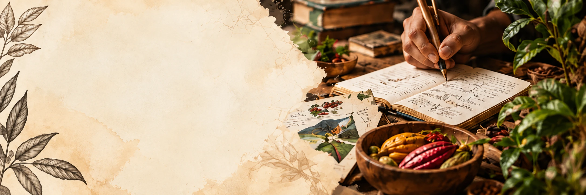

NUESTRO EQUIPO
INVESTIGADORES
Personas que investigan, preservan y proyectan nuestro patrimonio gastronómico.
SOBRE NUESTRO EQUIPO
Un equipo que transforma
conocimiento en patrimonio
El grupo Patrimonio Cultural y Gastronómico de Colombia reúne investigadores que trabajan en la generación de conocimiento para la preservación, documentación y difusión del patrimonio gastronómico del país.
Conocer
Preservar
Valorar
Compartir
NUESTRO EQUIPO INVESTIGADOR
Conoce a nuestros investigadores
Selecciona un perfil para consultar su trayectoria y áreas de trabajo.